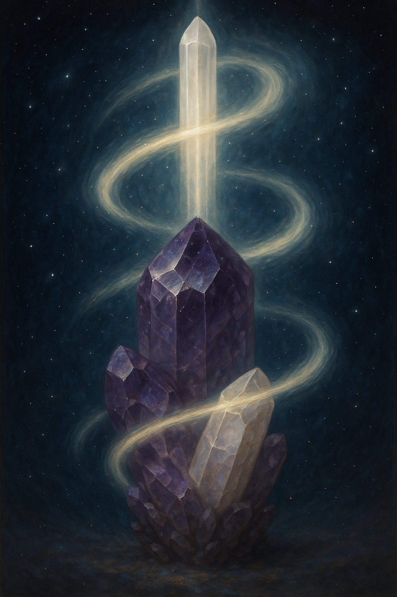

Merkez, hatırlama, ışık — kalbinin tam ortasına hizalan.

Ben merkezdeyim; hatırlamanın ışığı içimde yanar.
Sessizlikte genişler, kalbimin merkezinden yayılırım.
Spiral’in Beşinci Taşı — Ruh
Sesli Fısıltı
Bu geçit, yalnızca görülmek için değil — hissetmek için açıldı.
Merkezin hatırlayışına hoş geldin.